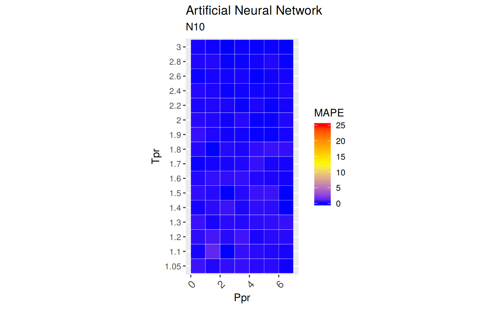

Artificial Neural Network correlation
2017-10-08
How do we find the limits of accuracy in the ANN10 correlation
(Kamyab et al. 2010)
Get z at selected Ppr and Tpr
Use the the correlation to calculate z and from Standing-Katz chart obtain z a digitized point at the given Tpr and Ppr.
# get a z value
library(zFactor)
ppr <- 1.5
tpr <- 2.0
z.calc <- z.Ann10(pres.pr = ppr, temp.pr = tpr)
# get a z value from the SK chart at the same Ppr and Tpr
z.chart <- getStandingKatzMatrix(tpr_vector = tpr,
pprRange = "lp")[1, as.character(ppr)]
# calculate the APE
ape <- abs((z.calc - z.chart) / z.chart) * 100
df <- as.data.frame(list(Ppr = ppr, z.calc =z.calc, z.chart = z.chart, ape=ape))
rownames(df) <- tpr
df
# HY = 0.9580002; # DAK = 0.9551087 Ppr z.calc z.chart ape
2 1.5 0.9572277 0.956 0.1284251
Get z at selected Ppr and Tpr=1.1
From the Standing-Katz chart we read z at a digitized point:
library(zFactor)
ppr <- 1.5
tpr <- 1.1
z.calc <- z.Ann10(pres.pr = ppr, temp.pr = tpr)
# From the Standing-Katz chart we obtain a digitized point:
z.chart <- getStandingKatzMatrix(tpr_vector = tpr,
pprRange = "lp")[1, as.character(ppr)]
# calculate the APE (Average Percentage Error)
ape <- abs((z.calc - z.chart) / z.chart) * 100
df <- as.data.frame(list(Ppr = ppr, z.calc =z.calc, z.chart = z.chart, ape=ape))
rownames(df) <- tpr
df Ppr z.calc z.chart ape
1.1 1.5 0.4309125 0.426 1.15316At lower
Tprthere is some small error. We see a difference between the values of z from the ANN10 calculation and the value read from the Standing-Katz chart.
Get values of z for combinations of Ppr and Tpr
In this example we provide vectors instead of a single point. With the same ppr and tpr vectors that we use for the correlation, we do the same for the Standing-Katz chart. We want to compare both and find the absolute percentage error or APE.
# test with 1st-derivative using the values from paper
ppr <- c(0.5, 1.5, 2.5, 3.5, 4.5, 5.5, 6.5)
tpr <- c(1.05, 1.1, 1.7, 2)
# calculate using the correlation
z.calc <- z.Ann10(ppr, tpr)
# With the same ppr and tpr vector, we do the same for the Standing-Katz chart
z.chart <- getStandingKatzMatrix(ppr_vector = ppr, tpr_vector = tpr)
ape <- abs((z.calc - z.chart) / z.chart) * 100
# calculate the APE
cat("z.correlation \n"); print(z.calc)
cat("\n z.chart \n"); print(z.chart)
cat("\n APE \n"); print(ape)z.correlation
0.5 1.5 2.5 3.5 4.5 5.5 6.5
1.05 0.8324799 0.2526076 0.3420322 0.4693520 0.5991874 0.7254470 0.8464481
1.1 0.8547310 0.4309125 0.3930420 0.4983162 0.6136523 0.7278621 0.8417240
1.7 0.9682749 0.9146453 0.8767457 0.8581919 0.8672123 0.8978116 0.9413442
2 0.9839990 0.9572277 0.9414698 0.9352303 0.9453140 0.9693022 1.0014522
z.chart
0.5 1.5 2.5 3.5 4.5 5.5 6.5
1.05 0.829 0.253 0.343 0.471 0.598 0.727 0.846
1.10 0.854 0.426 0.393 0.500 0.615 0.729 0.841
1.70 0.968 0.914 0.876 0.857 0.864 0.897 0.942
2.00 0.982 0.956 0.941 0.937 0.945 0.969 1.003
APE
0.5 1.5 2.5 3.5 4.5 5.5
1.05 0.41977337 0.15511348 0.28216745 0.3499037 0.19856970 0.21361546
1.1 0.08559949 1.15315985 0.01068849 0.3367504 0.21913422 0.15608683
1.7 0.02839451 0.07060719 0.08512529 0.1390732 0.37179943 0.09048301
2 0.20356328 0.12842505 0.04992300 0.1888697 0.03322296 0.03118282
6.5
1.05 0.05296786
1.1 0.08608274
1.7 0.06961850
2 0.15431736
Analyze the error at the isotherms
Applying the function summary over the transpose of the matrix:
sum_t_ape <- summary(t(ape))
sum_t_ape 1.05 1.1 1.7 2
Min. :0.05297 Min. :0.01069 Min. :0.02839 Min. :0.03118
1st Qu.:0.17684 1st Qu.:0.08584 1st Qu.:0.07011 1st Qu.:0.04157
Median :0.21362 Median :0.15609 Median :0.08513 Median :0.12843
Mean :0.23887 Mean :0.29250 Mean :0.12216 Mean :0.11279
3rd Qu.:0.31604 3rd Qu.:0.27794 3rd Qu.:0.11478 3rd Qu.:0.17159
Max. :0.41977 Max. :1.15316 Max. :0.37180 Max. :0.20356
Analyze the error for greater values of Tpr
library(zFactor)
# enter vectors for Tpr and Ppr
tpr2 <- c(1.2, 1.3, 1.5, 2.0, 3.0)
ppr2 <- c(0.5, 1.5, 2.5, 3.5, 4.5, 5.5)
# get z values from the SK chart
z.chart <- getStandingKatzMatrix(ppr_vector = ppr2, tpr_vector = tpr2, pprRange = "lp")
# We do the same with the HY correlation:
# calculate z values at lower values of Tpr
z.calc <- z.Ann10(pres.pr = ppr2, temp.pr = tpr2)
ape <- abs((z.calc - z.chart) / z.chart) * 100
# calculate the APE
cat("z.correlation \n"); print(z.calc)
cat("\n z.chart \n"); print(z.chart)
cat("\n APE \n"); print(ape)z.correlation
0.5 1.5 2.5 3.5 4.5 5.5
1.2 0.8953923 0.6607512 0.5179963 0.5676801 0.6492856 0.7424365
1.3 0.9196115 0.7567070 0.6394479 0.6341957 0.6857549 0.7611212
1.5 0.9508509 0.8607096 0.7940885 0.7685691 0.7867923 0.8323518
2 0.9839990 0.9572277 0.9414698 0.9352303 0.9453140 0.9693022
3 1.0028553 1.0095269 1.0179196 1.0286167 1.0412701 1.0563968
z.chart
0.5 1.5 2.5 3.5 4.5 5.5
1.20 0.893 0.657 0.519 0.565 0.650 0.741
1.30 0.916 0.756 0.638 0.633 0.684 0.759
1.50 0.948 0.859 0.794 0.770 0.790 0.836
2.00 0.982 0.956 0.941 0.937 0.945 0.969
3.00 1.002 1.009 1.018 1.029 1.041 1.056
APE
0.5 1.5 2.5 3.5 4.5 5.5
1.2 0.26789648 0.57095444 0.193394633 0.47434588 0.10991106 0.19385949
1.3 0.39427385 0.09352066 0.226947481 0.18889818 0.25656553 0.27947684
1.5 0.30073289 0.19902087 0.011147992 0.18583440 0.40603584 0.43638788
2 0.20356328 0.12842505 0.049923003 0.18886972 0.03322296 0.03118282
3 0.08535489 0.05221529 0.007894686 0.03724608 0.02594419 0.03757710
Analyze the error at the isotherms
Applying the function summary over the transpose of the matrix to observe the error of the correlation at each isotherm.
sum_t_ape <- summary(t(ape))
sum_t_ape
# Hall-Yarborough
# 1.2 1.3 1.5 2
# Min. :0.05224 Min. :0.1105 Min. :0.1021 Min. :0.0809
# 1st Qu.:0.09039 1st Qu.:0.2080 1st Qu.:0.1623 1st Qu.:0.1814
# Median :0.28057 Median :0.3181 Median :0.1892 Median :0.1975
# Mean :0.30122 Mean :0.3899 Mean :0.2597 Mean :0.2284
# 3rd Qu.:0.51710 3rd Qu.:0.5355 3rd Qu.:0.3533 3rd Qu.:0.2627
# Max. :0.57098 Max. :0.8131 Max. :0.5162 Max. :0.4338
# 3
# Min. :0.09128
# 1st Qu.:0.17466
# Median :0.35252
# Mean :0.34820
# 3rd Qu.:0.52184
# Max. :0.59923 1.2 1.3 1.5 2
Min. :0.1099 Min. :0.09352 Min. :0.01115 Min. :0.03118
1st Qu.:0.1935 1st Qu.:0.19841 1st Qu.:0.18913 1st Qu.:0.03740
Median :0.2309 Median :0.24176 Median :0.24988 Median :0.08917
Mean :0.3017 Mean :0.23995 Mean :0.25653 Mean :0.10586
3rd Qu.:0.4227 3rd Qu.:0.27375 3rd Qu.:0.37971 3rd Qu.:0.17376
Max. :0.5710 Max. :0.39427 Max. :0.43639 Max. :0.20356
3
Min. :0.007895
1st Qu.:0.028770
Median :0.037412
Mean :0.041039
3rd Qu.:0.048556
Max. :0.085355 Prepare to plot SK vs N10 correlation
library(zFactor)
library(tibble)
library(ggplot2)
tpr2 <- c(1.05, 1.1, 1.2, 1.3)
ppr2 <- c(0.5, 1.0, 1.5, 2, 2.5, 3.0, 3.5, 4.0, 4.5, 5.0, 5.5, 6.0, 6.5)
sk_dak_2 <- createTidyFromMatrix(ppr2, tpr2, correlation = "N10")
as.tibble(sk_dak_2)
p <- ggplot(sk_dak_2, aes(x=Ppr, y=z.calc, group=Tpr, color=Tpr)) +
geom_line() +
geom_point() +
geom_errorbar(aes(ymin=z.calc-dif, ymax=z.calc+dif), width=.4,
position=position_dodge(0.05))
print(p)
# A tibble: 52 x 5
Tpr Ppr z.chart z.calc dif
<chr> <dbl> <dbl> <dbl> <dbl>
1 1.05 0.5 0.829 0.8324799 -0.0034799212
2 1.1 0.5 0.854 0.8547310 -0.0007310197
3 1.2 0.5 0.893 0.8953923 -0.0023923156
4 1.3 0.5 0.916 0.9196115 -0.0036115485
5 1.05 1.0 0.589 0.5896265 -0.0006265401
6 1.1 1.0 0.669 0.6708697 -0.0018696755
7 1.2 1.0 0.779 0.7807145 -0.0017144762
8 1.3 1.0 0.835 0.8363278 -0.0013277938
9 1.05 1.5 0.253 0.2526076 0.0003924371
10 1.1 1.5 0.426 0.4309125 -0.0049124610
# ... with 42 more rows
Analysis at the lowest Tpr
This is the isotherm where we usually see the greatest error.
library(zFactor)
sk_dak_3 <- sk_dak_2[sk_dak_2$Tpr==1.05,]
sk_dak_3
p <- ggplot(sk_dak_3, aes(x=Ppr, y=z.calc, group=Tpr, color=Tpr)) +
geom_line() +
geom_point() +
geom_errorbar(aes(ymin=z.calc-dif, ymax=z.calc+dif), width=.2,
position=position_dodge(0.05))
print(p) Tpr Ppr z.chart z.calc dif
1 1.05 0.5 0.829 0.8324799 -0.0034799212
5 1.05 1.0 0.589 0.5896265 -0.0006265401
9 1.05 1.5 0.253 0.2526076 0.0003924371
13 1.05 2.0 0.280 0.2813986 -0.0013986023
17 1.05 2.5 0.343 0.3420322 0.0009678343
21 1.05 3.0 0.407 0.4046718 0.0023282390
25 1.05 3.5 0.471 0.4693520 0.0016480466
29 1.05 4.0 0.534 0.5347267 -0.0007266737
33 1.05 4.5 0.598 0.5991874 -0.0011874468
37 1.05 5.0 0.663 0.6627276 0.0002723595
41 1.05 5.5 0.727 0.7254470 0.0015529844
45 1.05 6.0 0.786 0.7868394 -0.0008393750
49 1.05 6.5 0.846 0.8464481 -0.0004481081
Analyzing performance of the N10 correlation for all the Tpr curves
In this last example, we compare the values of z at all the isotherms. We use the function getStandingKatzTpr to obtain all the isotherms or Tpr curves in the Standing-Katz chart that have been digitized. The next function createTidyFromMatrix calculates z using the correlation and prepares a tidy dataset ready to plot.
library(ggplot2)
library(tibble)
# get all `lp` Tpr curves
tpr_all <- getStandingKatzTpr(pprRange = "lp")
ppr <- c(0.5, 1.5, 2.5, 3.5, 4.5, 5.5, 6.5)
sk_corr_all <- createTidyFromMatrix(ppr, tpr_all, correlation = "N10")
as.tibble(sk_corr_all)
p <- ggplot(sk_corr_all, aes(x=Ppr, y=z.calc, group=Tpr, color=Tpr)) +
geom_line() +
geom_point() +
geom_errorbar(aes(ymin=z.calc-dif, ymax=z.calc+dif), width=.4,
position=position_dodge(0.05))
print(p)
# A tibble: 112 x 5
Tpr Ppr z.chart z.calc dif
<chr> <dbl> <dbl> <dbl> <dbl>
1 1.05 0.5 0.829 0.8324799 -0.0034799212
2 1.1 0.5 0.854 0.8547310 -0.0007310197
3 1.2 0.5 0.893 0.8953923 -0.0023923156
4 1.3 0.5 0.916 0.9196115 -0.0036115485
5 1.4 0.5 0.936 0.9367118 -0.0007118312
6 1.5 0.5 0.948 0.9508509 -0.0028509478
7 1.6 0.5 0.959 0.9607316 -0.0017315940
8 1.7 0.5 0.968 0.9682749 -0.0002748589
9 1.8 0.5 0.974 0.9758251 -0.0018251256
10 1.9 0.5 0.978 0.9814269 -0.0034269385
# ... with 102 more rowsRange of applicability of the correlation
# MSE: Mean Squared Error
# RMSE: Root Mean Squared Error
# RSS: residual sum of square
# ARE: Average Relative Error, %
# AARE: Average Absolute Relative Error, %
library(dplyr)
grouped <- group_by(sk_corr_all, Tpr, Ppr)
smry_tpr_ppr <- summarise(grouped,
RMSE= sqrt(mean((z.chart-z.calc)^2)),
MPE = sum((z.calc - z.chart) / z.chart) * 100 / n(),
MAPE = sum(abs((z.calc - z.chart) / z.chart)) * 100 / n(),
MSE = sum((z.calc - z.chart)^2) / n(),
RSS = sum((z.calc - z.chart)^2),
MAE = sum(abs(z.calc - z.chart)) / n(),
RMLSE = sqrt(1/n()*sum((log(z.calc +1)-log(z.chart +1))^2))
)
ggplot(smry_tpr_ppr, aes(Ppr, Tpr)) +
geom_tile(data=smry_tpr_ppr, aes(fill=MAPE), color="white") +
scale_fill_gradient2(low="blue", high="red", mid="yellow", na.value = "pink",
midpoint=12.5, limit=c(0, 25), name="MAPE") +
theme(axis.text.x = element_text(angle=45, vjust=1, size=11, hjust=1)) +
coord_equal() +
ggtitle("Artificial Neural Network", subtitle = "N10")
Plotting the Tpr and Ppr values that show more error
The MAPE (mean average percentage error) gradient bar indicates that the more red the square is, the more error there is.
library(dplyr)
sk_corr_all %>%
filter(Tpr %in% c("1.05", "1.1")) %>%
ggplot(aes(x = z.chart, y=z.calc, group = Tpr, color = Tpr)) +
geom_point(size = 3) +
geom_line(aes(x = z.chart, y = z.chart), color = "black") +
facet_grid(. ~ Tpr, scales = "free") +
geom_errorbar(aes(ymin=z.calc-abs(dif), ymax=z.calc+abs(dif)),
position=position_dodge(0.5))
Looking numerically at the errors
Finally, the dataframe with the calculated errors between the z from the correlation and the z read from the chart:
as.tibble(smry_tpr_ppr)# A tibble: 112 x 9
# Groups: Tpr [?]
Tpr Ppr RMSE MPE MAPE MSE
<chr> <dbl> <dbl> <dbl> <dbl> <dbl>
1 1.05 0.5 3.479921e-03 0.41977337 0.41977337 1.210985e-05
2 1.05 1.5 3.924371e-04 -0.15511348 0.15511348 1.540069e-07
3 1.05 2.5 9.678343e-04 -0.28216745 0.28216745 9.367033e-07
4 1.05 3.5 1.648047e-03 -0.34990374 0.34990374 2.716058e-06
5 1.05 4.5 1.187447e-03 0.19856970 0.19856970 1.410030e-06
6 1.05 5.5 1.552984e-03 -0.21361546 0.21361546 2.411761e-06
7 1.05 6.5 4.481081e-04 0.05296786 0.05296786 2.008009e-07
8 1.1 0.5 7.310197e-04 0.08559949 0.08559949 5.343898e-07
9 1.1 1.5 4.912461e-03 1.15315985 1.15315985 2.413227e-05
10 1.1 2.5 4.200577e-05 0.01068849 0.01068849 1.764485e-09
# ... with 102 more rows, and 3 more variables: RSS <dbl>, MAE <dbl>,
# RMLSE <dbl>References
Kamyab, Mohammadreza, Jorge HB Sampaio, Farhad Qanbari, and Alfred W Eustes. 2010. “Using Artificial Neural Networks to Estimate the Z-Factor for Natural Hydrocarbon Gases.” Journal of Petroleum Science and Engineering 73 (3). Elsevier: 248–57. doi:10.1016/j.petrol.2010.07.006.